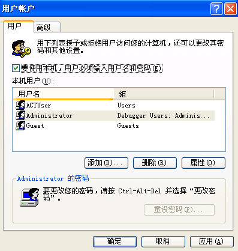
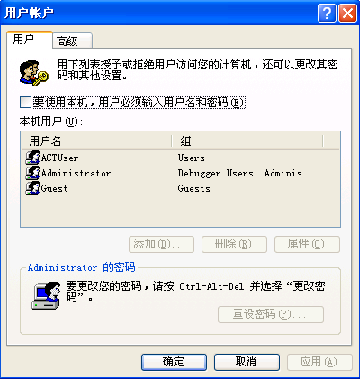

如何让XP自动登陆
2007年08月20日 星期一 03:33
|
有些XP系统可能因为版本的原因，在系统启动之后，并不会自动登陆系统，一定要按一下“确定”才能进入系统，这就导致了一些麻烦，比如说，我如果要让电脑在早上自动开机并且自动播放音乐的话，那就不可能做到了，因为系统不能自动登陆了。 那么，如何才能让系统自动登陆呢，其实很简单，只要修改下系统的设置就OK了。。 具体的操作如下： 在“开始”--“运行”下输入：control userpasswords2 会弹出一个窗口：

http://hiphotos.baidu.com/tc704/pic/item/37fce650e8b0b6551138c27b.jpg
把“要使用本机，用户必须输入用户名和密码”前面的那个勾去掉就可以了。。

http://hiphotos.baidu.com/tc704/pic/item/9a50db07556696c47a894744.jpg 好了，现在重启一下机子，你就会发现系统可以直接登陆了。。。。。 ============================================================================== 让Windows XP自动登陆
Windows XP是一个比较安全的操作系统，每次启动时都要求选择账户并输入密码，对于公用电脑，这样当然更安全，但是如果这台电脑是一个人用，也没有什么重要资料，每次都要选择帐户并输入密码实在太麻烦了，怎么样才能让 Windows XP 不用输入密码自动登录呢？
单击“开始/运行”，输入“rundll32 netplwiz.dll,UsersRunDll”，按回车键后弹出“用户帐户”窗口，看清楚，这可跟“控制面板”中打开的“用户账户”面板窗口不同哦！然后取消选定“要使用本机，用户必须输入用户名和密码”选项，单击确定，在弹出的对话框中输入你想让电脑每次自动登录的账户和密码即可。 事实上，在Windows 2000中也可以这样实现自动登录，不过它可以通过“控制面板”打开“用户账户”窗口，而在Windows XP中不行罢了。 还有一种简单有效的办法，可以让WindowsXP自动登陆。 运行“control userpasswords2”命令,就可以打开原来Windows2000风格的用户帐户管理界面，在这个窗口中去除“要使用本机，用户必须输入用户名和密码”的勾选，然后点击“应用”，在弹出的“自动登陆”窗口中输入要自动登陆的用户名和密码，确定后，一切就OK了。 |